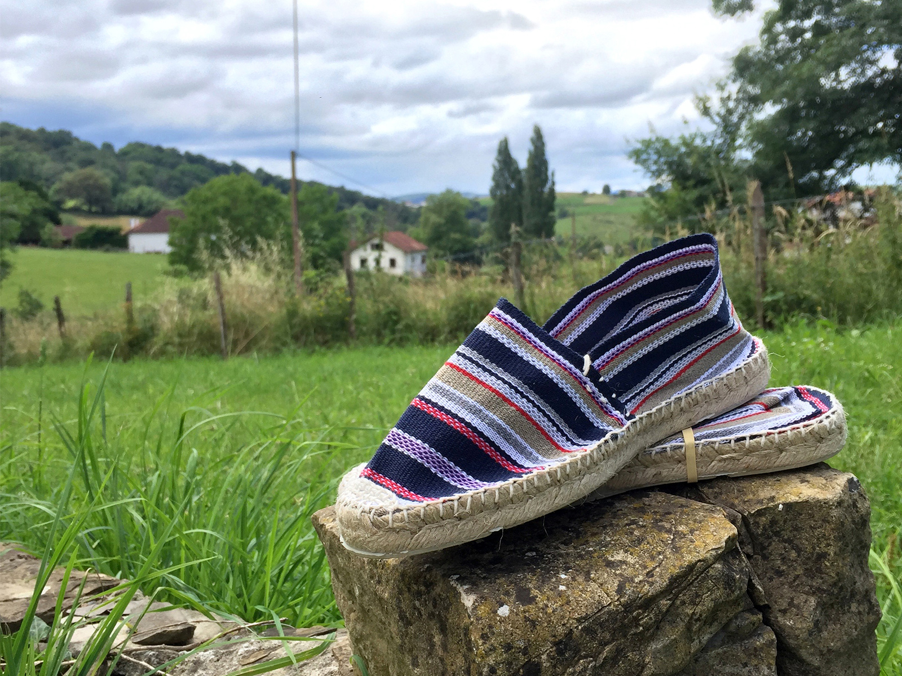
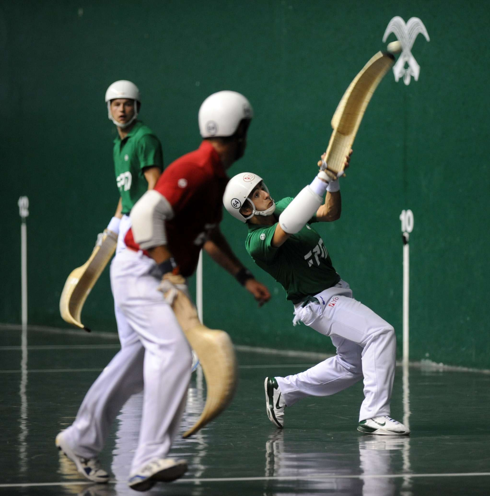
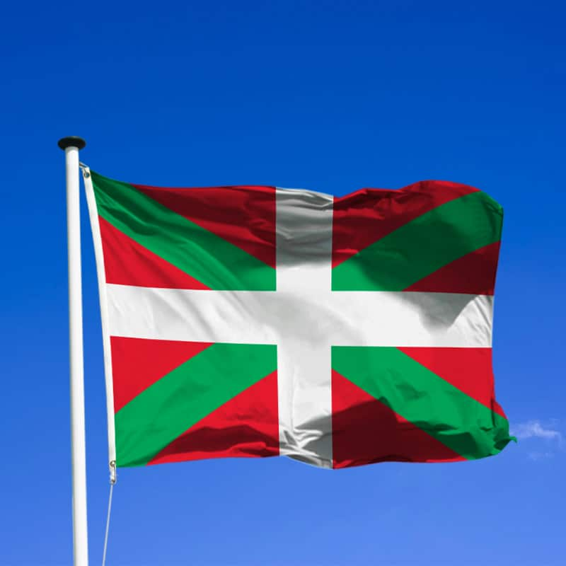
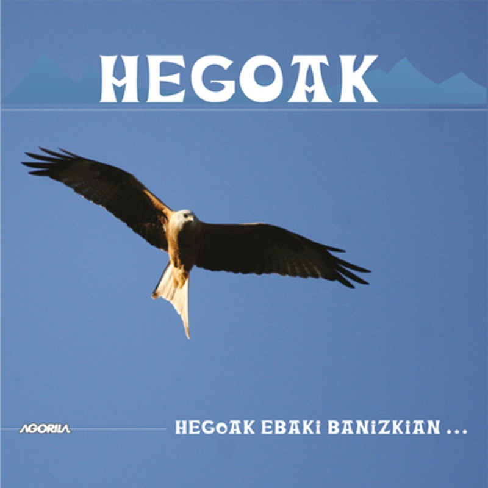
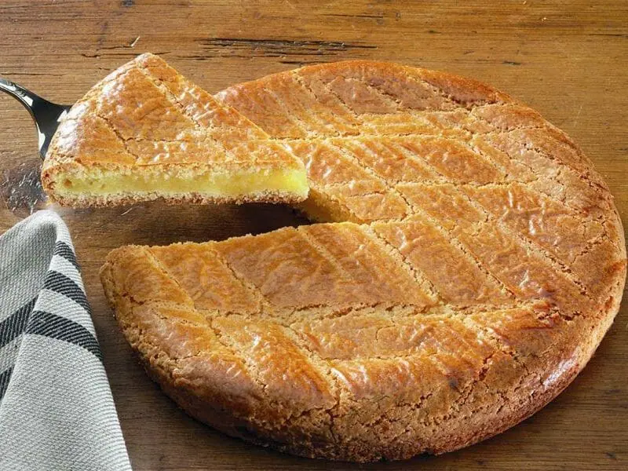
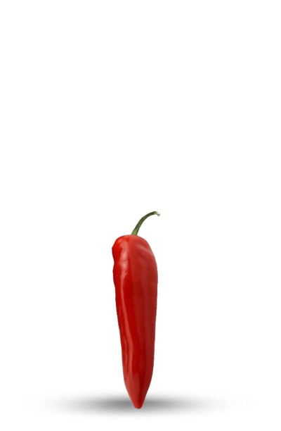
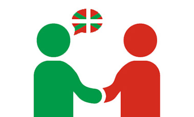

Les espadrilles

La pelote basque

Le drapeau basque

Une des musiques emblématiques du Pays Basque

Un match de rugby
Stade Aguilera, 64200 Biarritz

Les danses basques

Le gâteau basque

Le piment d'espelette

Les maisons basques dites "etxe"

La force basque

Les fêtes de village

La langue basque